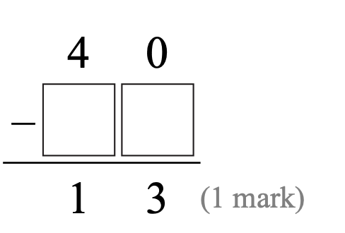

The club ________ (hold) games for kids every summer.
Answer: holds
Explanation: 一般现在时；第三人称单数主语动词加 s/es，复数或 I/we/they 用原形。
已掌握
| # | 单词/词组 | 中文意思 | 例句/说明 | 已掌握 |
|---|---|---|---|---|
| noun 名词 | ||||
| 1 | friend | 朋友 | My friend is kind. | |
| 2 | church | 教堂 | The old church is quiet. | |
| 3 | flower | 花 | This flower is red. | |
| 4 | chef | 厨师 | The chef cooks dinner. | |
| 5 | pupil | 小学生 | The pupil reads a book. | |
| 6 | role | 角色 | I have a role in the play. | |
| 7 | meat | 肉类 | I eat meat for dinner. | |
| 8 | doctor | 医生 | I can use doctor in class. | |
| preposition 介词 | ||||
| 9 | during | 在……之间 | I read during the break. | |
| phrase 短语 | ||||
| 10 | take photo | 照相 | I take a photo of my cat. | |
| 11 | clean the dishes | 洗餐具 | I can use clean the dishes in class. | |
| 12 | organize the bookshelf | 整理书架 | I can use organize the bookshelf in class. | |
| adjective 形容词 | ||||
| 13 | hard | 硬的；困难的 | This question is hard. | |
| 14 | popular | 流行的 | I can use popular in class. | |
| 15 | favourite | 特别喜欢的 | My favourite sport is basketball. | |
| verb/noun 动词/名词 | ||||
| 16 | change | 改变，找零 | I can change my answer. | |
| uncategorized 未分类 | ||||
| 17 | English | 英语 | I can use English in class. | |
| 18 | keep | 保持 | I can use keep in class. | |
| 19 | kitchen | 厨房 | I can use kitchen in class. | |
| 20 | sound | 声音 | I can use sound in class. | |
| # | 单词/词组 | 中文意思 | 例句/说明 | 已掌握 |
|---|---|---|---|---|
| adjective 形容词 | ||||
| 1 | thick | 厚的 | This book is thick. | |
| 2 | different | 不同的 | I can use different in class. | |
| noun 名词 | ||||
| 3 | genie | 精灵 | The genie grants a wish. | |
| 4 | court | 球场 | We play on the court. | |
| 5 | musical | 音乐剧 | I can use musical in class. | |
| 6 | fable | 寓言 | The fable has a lesson. | |
| 7 | moral | 道理 | The story has a moral. | |
| 8 | event | 事件 | This event is fun. | |
| 9 | piece | 一块/一张 | I want one piece of paper. | |
| 10 | roundabout | 旋转木马 | The roundabout is in the playground. | |
| 11 | costume | 戏服 | I wear a costume at the festival. | |
| 12 | tutor | 家庭教师 | My tutor helps me study. | |
| verb 动词 | ||||
| 13 | chase | 追逐 | The dog may chase the ball. | |
| phrase 短语 | ||||
| 14 | Causeway Bay | 铜锣湾 | I can use Causeway Bay in class. | |
| 15 | step on | 踩到 | I can use step on in class. | |
| 16 | capital letters | 大写字母 | I can use capital letters in class. | |
| 17 | red packet | 红包 | I can use red packet in class. | |
| uncategorized 未分类 | ||||
| 18 | passage | 章节 | I can use passage in class. | |
| 19 | corresponding | 相对应的 | I can use corresponding in class. | |
| 20 | False | 错误的 | I can use False in class. | |
| 21 | structure | 结构 | I can use structure in class. | |
| 22 | shout | 喊 | I can use shout in class. | |
| 23 | thief | 小偷 | I can use thief in class. | |
| 24 | model | 模范 | I can use model in class. | |
| 25 | organic | 有机的 | I can use organic in class. | |
| 26 | staff | 员工 | I can use staff in class. | |
| 27 | lollies | 棒棒糖 | I can use lollies in class. | |
| 28 | illustrate | 插画 | I can use illustrate in class. | |
| 29 | campsite | 营地 | I can use campsite in class. | |
| adverb 副词 | ||||
| 30 | accidently | 偶然地 | I can use accidently in class. | |
| # | 单词/词组 | 中文意思 | 例句/说明 | 已掌握 |
|---|---|---|---|---|
| time/date 时间日期 | ||||
| 1 | July | 七月 | July is the seventh month. | |
| 2 | September | 九月 | September is the ninth month. | |
| 3 | Wednesday | 星期三 | Wednesday is a weekday. | |
| 4 | Thursday | 星期四 | Thursday is a weekday. | |
| 5 | Saturday | 星期六 | Saturday is a weekend day. | |
| time unit 时间单位 | ||||
| 6 | day | 日 | A day has 24 hours. | |
| 7 | minute | 分 | A minute has 60 seconds. | |
| numbers 数字 | ||||
| 8 | ninety | 90 | Ninety is 90. | |
| 9 | hundred | 百 | One hundred is 100. | |
| ordinal numbers 序数 | ||||
| 10 | second | 第二 | This is the second shape. | |
| solid shape 立体图形 | ||||
| 11 | triangular prism | 三棱柱 | A triangular prism has triangular faces. | |
| 12 | hexagonal prism | 六棱柱 | A hexagonal prism has hexagonal faces. | |
| 13 | pentagonal pyramid | 五棱锥 | A pentagonal pyramid has pentagonal faces. | |
| 14 | cylinder | 圆柱 | A cylinder has two circular faces. | |
| 15 | sphere | 球 | A sphere is round. | |
| # | 单词/词组 | 中文意思 | 例句/说明 | 已掌握 |
|---|---|---|---|---|
| operations 运算 | ||||
| 1 | addition | 加法 | Addition means putting numbers together. | |
| 2 | be left | 剩下的 | How many apples will be left? | |
| geometry 几何 | ||||
| 3 | right angle | 直角 | A right angle is 90 degrees. | |
| 4 | perpendicular line | 垂直线 | Perpendicular lines meet at a right angle. | |
| 5 | opposite side | 对边 | The opposite sides are equal. | |
| directions 方向 | ||||
| 6 | direction | 方向 | Direction tells us where to go. | |
| question word 题目词 | ||||
| 7 | calculate | 计算 | Calculate the answer. | |
| 8 | estimate | 估计 | Estimate the answer first. | |
| 9 | backwards | 向后；倒着 | Count backwards from 20. | |
| 10 | match | 匹配 | Match the number to the word. | |
| 11 | respectively | 分别地 | Tom and Ben have 2 and 3 books respectively. | |
| place value 位值 | ||||
| 12 | tens | 十位 | The digit is in the tens place. | |
| comparison 比较 | ||||
| 13 | less | 更少的；小于 | 8 is less than 10. | |
| 14 | fewest | 最少的 | Which group has the fewest? | |
| time/date 时间日期 | ||||
| 15 | leap year | 闰年 | A leap year has 366 days. | |
| 16 | non-leap year | 平年 | A non-leap year has 365 days. | |
| position 位置 | ||||
| 17 | behind | 后面 | The bag is behind the chair. | |
| 18 | above | 上面 | The clock is above the board. | |
| operations calculation 运算 | ||||
| 19 | difference | 差 | The difference is the answer in subtraction. | |
| 20 | multiplication | 乘法 | Multiplication can use times. | |
| 21 | product | 积 | The product is the answer in multiplication. | |
| 22 | expression | 式子 | Write the expression in horizontal form. | |
| 23 | divisor | 除数 | The divisor divides the dividend. | |
| 24 | column form | 竖式形式 | Write it in column form. | |
| currency money 货币 | ||||
| 25 | exchange | 交换 | We exchange money at the counter. | |
| measurement 测量 | ||||
| 26 | measure | 测量 | We measure the length with a ruler. | |
| 27 | distance | 距离 | Find the distance between the two points. | |
| data charts 统计图 | ||||
| 28 | pictogram | 象形图 | Read the pictogram. | |
| 29 | block chart | 方块图 | Read the block chart. | |
| 句型结构 | ||||
| 30 | Angle ... is larger than Angle ... | 角......大于角...... | Angle A is larger than Angle B. | |
